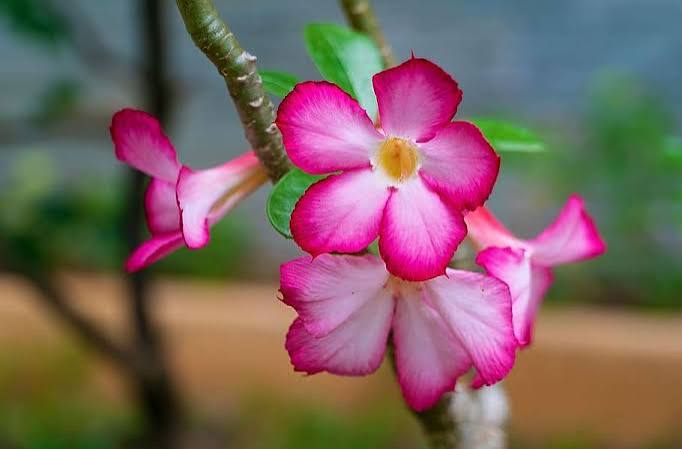
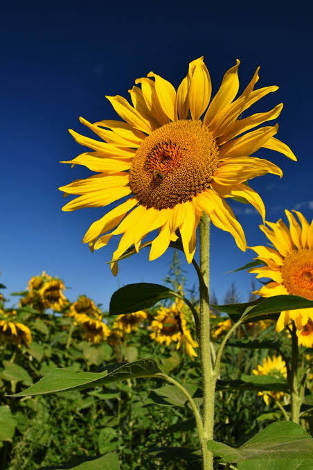
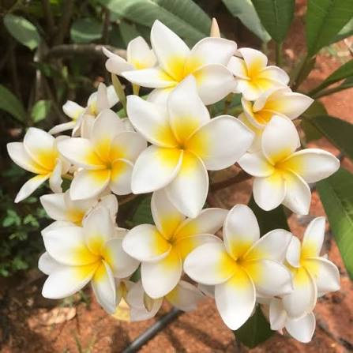
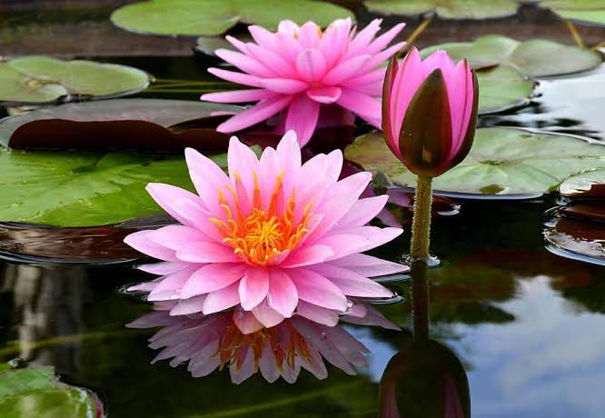
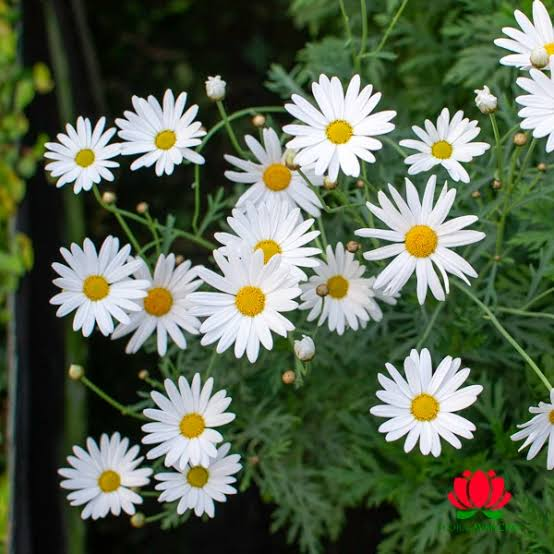
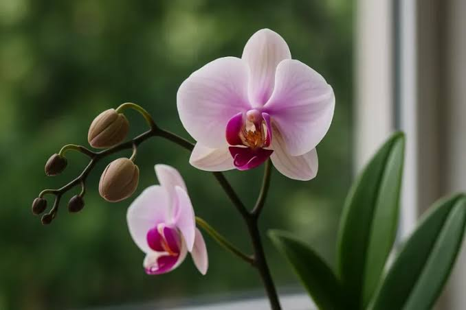
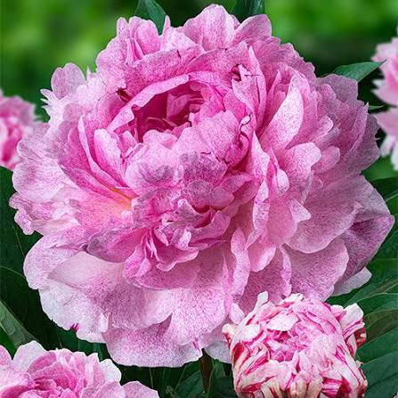
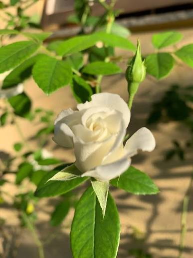
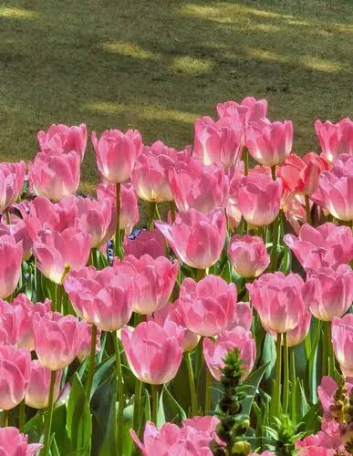
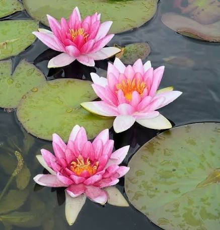

Flor do Deserto
A flor do deserto é uma planta resistente ao clima seco. Suas flores coloridas contrastam com seu caule grosso, que armazena água. É uma planta muito apreciada pela beleza e resistência.

Girassol
O girassol representa alegria, energia e vitalidade. Durante seu crescimento acompanha o movimento do sol.

Jasmim
O jasmim possui pequenas flores brancas e um perfume delicado. É muito usado em jardins e perfumes.

Lótus
A flor de lótus cresce sobre a água e simboliza paz, pureza e renovação espiritual.

Margarida
A margarida simboliza simplicidade, inocência e esperança.

Orquídea
A orquídea é conhecida pela elegância e enorme variedade de espécies e cores.

Peônia
A peônia representa prosperidade, felicidade e amor.

Rosa Branca
A rosa branca simboliza paz, pureza, respeito e novos começos.

Tulipa
A tulipa representa elegância, carinho e renovação.

Vitória-régia
A vitória-régia é uma planta aquática da Amazônia, famosa por suas folhas gigantes e flores exuberantes.